第 9 章 图像梯度#
本章解决：为什么"梯度"能找边缘——图像梯度（image gradient）衡量的是灰度变化的速度：边缘处灰度突变、梯度值大，平滑处梯度值接近 0；图像上不求真正的导数，而是用像素差分（finite difference）近似。Sobel 算子把"高斯平滑 + 一阶差分"打包成 3×3 核，分别近似 x、y 方向的偏导数；Scharr 算子在同样速度下把 3×3 核的精度再抬一档；Laplacian 算子是二阶导数、旋转不变，一个核同时照顾所有方向。本章还解决三件实操要事：
ddepth为什么必须用cv2.CV_64F（负导数截断问题）、结果怎么用cv2.convertScaleAbs转回 8 位图、两个方向的边缘怎么用cv2.addWeighted叠加起来。
运行环境约定
本章代码引用素材目录根下的图片，路径写作相对路径，运行时工作目录需为 数字图像处理-python 根目录，否则 imread 返回 None。原书用 Sobel4.bmp、Scharr.bmp、Laplacian.bmp（黑白井字图）与 lena.bmp 演示，本章统一换成素材目录里的图片：picture7.png（黑底白色字母 j 的二值图）顶替 Sobel4.bmp / Scharr.bmp / Laplacian.bmp，picture1.jpg 顶替 lena.bmp。代码逻辑与原书一致，控制台打印的具体数值与窗口画面会随图片不同而不同。
9.0 本章导图#
9.1 Sobel 理论基础#
图像梯度计算的是图像变化的速度。对于图像的边缘部分，其灰度值变化较大，梯度值也较大；相反，对于图像中比较平滑的部分，其灰度值变化较小，相应的梯度值也较小。一般情况下，图像梯度计算的是图像的边缘信息。
严格来讲，图像梯度计算需要求导数，但是图像梯度一般通过计算像素值的差来得到梯度的近似值（近似导数值）——图像是离散的，导数只能用差分（finite difference）来近似。
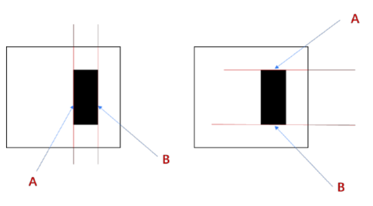
图 9-1 中的左右两幅图分别描述了图像的水平边界和垂直边界：
- 左图：在垂直方向的线条 A 和线条 B 的位置，其右侧像素值与左侧像素值的差值不为零，因此是边界；其余列右侧与左侧像素值的差值均为零，不是边界。
- 右图：在水平方向的线条 A 和线条 B 的位置，其下侧像素值与上侧像素值的差值不为零，因此是边界；其余行下侧与上侧像素值的差值均为零，不是边界。
将上述运算关系进一步优化，可以得到更复杂的边缘信息。本章关注 Sobel 算子、Scharr 算子和 Laplacian 算子的使用。
9.1.1 Sobel 算子是什么#
Sobel 算子（Sobel operator）是一种离散的微分算子（discrete differentiation operator），该算子结合了高斯平滑（Gaussian smoothing）和微分求导运算，利用局部差分寻找边缘，计算所得的是一个梯度的近似值。
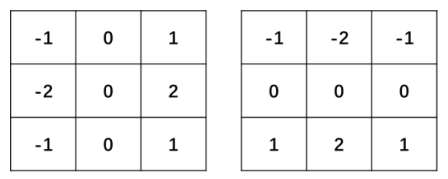
这里先厘清一组等价名词。滤波器（filter）通常指由一幅图像根据像素点 \((x, y)\) 邻近的区域计算得到另一幅新图像的算法，由邻域及预定义的操作构成，规定了滤波时所采用的形状以及该区域内像素值的组成规律。同一个东西在不同领域有不同叫法：信号领域叫"滤波器"，数学领域叫"核（kernel）"，此外还有掩模（mask）、模板（template）、窗口（window）、算子（operator）等称呼。本章出现的滤波器多数是线性滤波器（linear filter）——目标像素点的值等于原始像素值及其周围像素值的加权和，这种基于线性核的滤波就是卷积（convolution）。为方便说明，本章直接用"算子"来指代各种算子所使用的滤波器，例如"Sobel 算子"通常指 Sobel 滤波器。
拓展：Sobel 核可以拆成 平滑 × 差分
Gx 核可以拆成一个列向量与一个行向量的外积：平滑部分 \([1, 2, 1]^{\mathrm T}\) 乘差分部分 \([-1, 0, 1]\)。平滑 \([1, 2, 1]\) 正是小尺寸高斯核的近似，差分 \([-1, 0, 1]\) 就是中心差分——"高斯平滑 + 微分求导"这句话就落在这里。拆开看还有两个好处：其一，可分离核（separable kernel）先平滑后差分，计算量从 9 次乘加降到 6 次；其二，ksize 取 5、7 时 OpenCV 自动换用更长的高斯平滑系数，核越大平滑越强、抗噪越好，但定位边缘越粗。
假定有原始图像 src，对 Sobel 算子的计算进行讨论。
9.1.2 计算水平方向偏导数的近似值#
将 Sobel 算子与原始图像 src 进行卷积计算，可以得到水平方向上的像素值变化情况。当 Sobel 算子的大小为 3×3 时，水平方向偏导数 \(G_x\) 的计算方式为：
式中 src 是原始图像，假设其中有 9 个像素点，如图 9-3 所示。
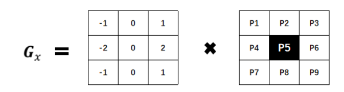
要计算像素点 P5 的水平方向偏导数 \(P5_x\)，需要利用 Sobel 算子及 P5 的邻域点：
即用 P5 右侧像素点的像素值减去其左侧像素点的像素值。其中，中间像素点（P4 和 P6）距离 P5 较近，其像素值差值的权重为 2；其余差值的权重为 1。
9.1.3 计算垂直方向偏导数的近似值#
将 Sobel 算子与原始图像 src 进行卷积计算，可以得到垂直方向上的变化情况。当 Sobel 算子的大小为 3×3 时，垂直方向偏导数 \(G_y\) 的计算方式为：
src 中同样假设有 9 个像素点，如图 9-4 所示。
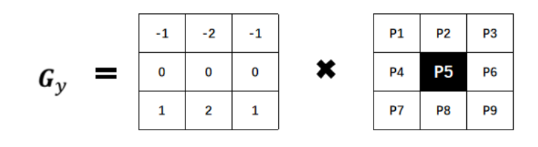
要计算像素点 P5 的垂直方向偏导数 \(P5_y\)：
即用 P5 下一行像素点的像素值减去上一行像素点的像素值。其中，中间像素点（P2 和 P8）距离 P5 较近，其像素值差值的权重为 2；其余差值的权重为 1。
9.2 Sobel 算子及函数使用#
在 OpenCV 内，使用函数 cv2.Sobel() 实现 Sobel 算子运算，其语法形式为：
式中：
- dst 代表目标图像。
- src 代表原始图像。
- ddepth 代表输出图像的深度，具体对应关系如表 9-1 所示。
- dx 代表 x 方向上的求导阶数。
- dy 代表 y 方向上的求导阶数。
- ksize 代表 Sobel 核的大小。该值为 -1 时，会使用 Scharr 算子进行运算。
- scale 代表计算导数值时所采用的缩放因子，默认为 1，即没有缩放。
- delta 代表加在目标图像 dst 上的值，可选，默认为 0。
- borderType 代表边界样式，具体类型及值如表 9-2 所示。
表 9-1 输入图像深度与输出图像深度的对应关系：
| 输入图像深度（src.depth()） | 输出图像深度（ddepth） |
|---|---|
| cv2.CV_8U | -1 / cv2.CV_16S / cv2.CV_32F / cv2.CV_64F |
| cv2.CV_16U / cv2.CV_16S | -1 / cv2.CV_32F / cv2.CV_64F |
| cv2.CV_32F | -1 / cv2.CV_32F / cv2.CV_64F |
| cv2.CV_64F | -1 / cv2.CV_64F |
表 9-2 borderType 类型及值（以 abcdefgh 表示图像、i 表示填充值）：
| 类型 | 具体值 |
|---|---|
| cv2.BORDER_CONSTANT | iiiiii|abcdefgh|iiiiiii，特定的 i |
| cv2.BORDER_REPLICATE | aaaaaa|abcdefgh|hhhhhhh |
| cv2.BORDER_REFLECT | fedcba|abcdefgh|hgfedcb |
| cv2.BORDER_WRAP | cdefgh|abcdefgh|abcdefg |
| cv2.BORDER_REFLECT_101 | gfedcb|abcdefgh|gfedcba |
| cv2.BORDER_TRANSPARENT | uvwxyz|abcdefgh|ijklmno |
| cv2.BORDER_REFLECT101 | 和 BORDER_REFLECT_101 一致 |
| cv2.BORDER_DEFAULT | 和 BORDER_REFLECT_101 一致 |
| cv2.BORDER_ISOLATED | 不考虑 ROI（Region of Interest，感兴趣区域）以外的区域 |
原书笔误：BORDER_TRANSPARENT 的示意串
表 9-2 中 BORDER_TRANSPARENT 一行的填充示意原书印作 "uvwxyz|absdefgh|ijklmno"，其中 "absdefgh" 是 "abcdefgh" 的笔误，多了个 s。
9.2.1 参数 ddepth#
函数 cv2.Sobel() 的语法中规定，可以将 ddepth 参数的值设置为 -1，让处理结果与原始图像保持一致。但是，如果直接将 ddepth 的值设置为 -1，在计算时得到的结果可能是错误的。
在实际操作中，计算梯度值可能会出现负数。如果处理的图像是 8 位图类型，则在 ddepth 的值为 -1 时，意味着指定运算结果也是 8 位图类型，那么所有负数会自动截断为 0，发生信息丢失。为了避免信息丢失，在计算时要先使用更高的数据类型 cv2.CV_64F，再通过取绝对值将其映射为 cv2.CV_8U（8 位图）类型。所以，通常要将 ddepth 的值设置为 cv2.CV_64F。
用一个具体例子说明。图 9-5 的原始图像（左图）是一幅二值图像，黑色部分的像素值为 0，白色部分的像素值为 1。在计算 A 线条所在列和 B 线条所在列的近似偏导数时：
- 针对 A 线条所在列，右侧像素值减去左侧像素值所得近似偏导数的值为 -1。
- 针对 B 线条所在列，右侧像素值减去左侧像素值所得近似偏导数的值为 1。
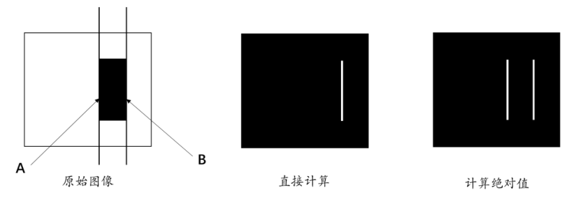
针对上述偏导数结果进行不同方式的处理，会得到不同的结果：
- 直接计算。此时 A 线条位置的值为负数，B 线条位置的值为正数。在显示时，负值不在 8 位图范围内，要做额外处理：将 A 线条处的负数偏导数处理为 0，B 线条处的正数偏导数保持不变。显示结果如图 9-5 中间的图所示——只剩 B 一条线。
- 计算绝对值。此时 A 线条处的负数偏导数被处理为正数，B 线条处的正数偏导数保持不变，所有值都落在 8 位图的表示范围内，不再需要额外处理。显示结果如图 9-5 右图所示——两条边界都在。
上述问题在计算垂直方向的近似偏导数时同样存在。图 9-6 的原始图像（左图）也是一幅二值图像：针对 A 线条所在行，下方像素值减去上方像素值所得近似偏导数为 -1；针对 B 线条所在行，该差值为 1。同样地，直接计算只显示 B，取绝对值后 A、B 都能显示。
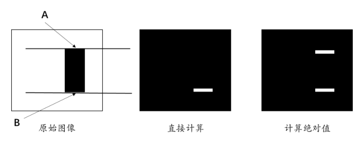
经过上述分析可知：为了让偏导数正确地显示出来，需要将值为负数的近似偏导数转换为正数，即对偏导数取绝对值。图 9-7 描述了如何计算偏导数。
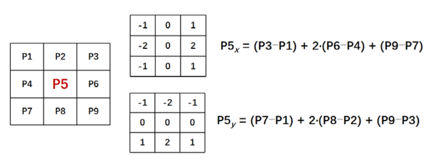
为了得到结果为正数的偏导数，需要对图 9-7 中计算的偏导数取绝对值：
在需要时，还可以把两个方向的结果相加：
在实际操作中，计算梯度值可能会出现负数。通常处理的图像是 8 位图类型，如果结果也是该类型，那么所有负数会自动截断为 0，发生信息丢失。所以，为了避免信息丢失，在计算时使用更高的数据类型 cv2.CV_64F，再通过取绝对值将其映射为 cv2.CV_8U（8 位图）类型。
在 OpenCV 中，使用函数 cv2.convertScaleAbs() 对参数取绝对值，其语法格式为：
式中：
- dst 代表处理结果。
- src 代表原始图像。
- alpha 代表调节系数，可选，默认为 1。
- beta 代表调节亮度值，可选，默认为 0。
原书笔误：beta 参数的描述
原书写作"beta 代表调节亮度值，该值是默认值，默认为 0"。"该值是默认值"应为"该值是可选值"，与 alpha 的表述保持一致。
该函数的作用是将原始图像 src 转换为 256 色位图，可以表示为：
式中 saturate() 表示计算结果的最大值是饱和值（saturation）：当 src*alpha+beta 的值超过 255 时，其取值为 255。
【例 9.1】使用函数 cv2.convertScaleAbs() 对一个随机数组取绝对值。
# ===== 9.2.1 例 9.1：convertScaleAbs 取绝对值 =====
import cv2
import numpy as np
img = np.random.randint(-256, 256, size=[4, 5], dtype=np.int16) # -256~255 的随机 int16 数组
rst = cv2.convertScaleAbs(img) # 转为 8 位无符号：负数变正数，超界饱和
print("img=\n", img)
print("rst=\n", rst)
运行程序，输出为（随机数组，每次运行数值不同）：
img=
[[ 138 157 -222 -204 -168]
[-122 132 -57 -4 212]
[-252 208 15 39 37]
[ -82 -163 -191 209 -12]]
rst=
[[138 157 222 204 168]
[122 132 57 4 212]
[252 208 15 39 37]
[ 82 163 191 209 12]]
每个负数都变成了对应的正数，正数保持不变；数组类型从 int16 变成了 uint8。
拓展：convertScaleAbs 与 numpy 手取绝对值的差别
容易误以为"取绝对值转 uint8"用 np.abs(img).astype(np.uint8) 就行——两者在越界时行为不同。astype 是按内存回绕（wrap around）：np.uint8(-50) 得到 206；而 convertScaleAbs 按饱和（saturation）处理，convertScaleAbs(-50) 得到 50，超过 255 的值截断为 255。实测 cv2.convertScaleAbs(np.array([[120, 130]], dtype=np.int16), alpha=2, beta=10) 输出 [[250 255]]——2×130+10=270 被饱和成 255。另外 alpha 还能顺手增强对比度：梯度普遍偏暗时，设 alpha=2 可以把边缘拉亮。
9.2.2 方向#
在函数 cv2.Sobel() 中，参数 dx 表示 x 轴方向的求导阶数，参数 dy 表示 y 轴方向的求导阶数。参数 dx 和 dy 通常的值为 0 或者 1，最大值为 2。如果是 0，表示在该方向上没有求导。参数 dx 和参数 dy 的值不能同时为 0。
参数 dx 和 dy 可以有多种形式的组合，主要包含：
- 计算 x 方向边缘（梯度）：dx=1, dy=0。
- 计算 y 方向边缘（梯度）：dx=0, dy=1。
- 参数 dx 与参数 dy 的值均为 1：dx=1, dy=1。
- 计算 x 方向和 y 方向的边缘叠加：通过组合方式实现。
1. 计算 x 方向边缘（梯度）：dx=1、dy=0#
如果想只计算 x 方向（水平方向）的边缘，需要将参数 dx 和 dy 设置为 "dx=1, dy=0"，也可以设置为 "dx=2, dy=0"。此时仅获取水平方向的边缘信息，语法格式为：
使用该语句获取边缘图的示例如图 9-8 所示，其中左图为原始图像，右图为获取的边缘图。
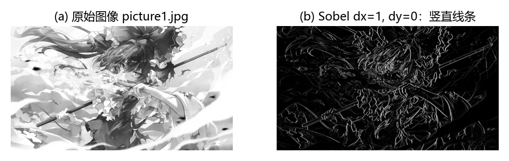
2. 计算 y 方向边缘（梯度）：dx=0、dy=1#
如果想只计算 y 方向（垂直方向）的边缘，需要将参数设置为 "dx=0, dy=1"，也可以设置为 "dx=0, dy=2"。此时仅获取垂直方向的边缘信息，语法格式为：
获取边缘图的示例如图 9-9 所示。
拓展：x 方向边缘到底长什么样
图像坐标系里 x 轴指向右、y 轴指向下。dx=1 算的是灰度沿 x 方向（从左到右）的变化率，变化发生在竖直边界上，所以图 9-8 里显示的是竖线；dy=1 算的是灰度沿 y 方向（从上到下）的变化率，变化发生在水平边界上，所以图 9-9 里显示的是横线。口诀：dx 管竖线，dy 管横线——"x 方向边缘"说的是"灰度沿 x 方向变化的位置"，不是"横着的线"。
3. 参数 dx 与参数 dy 的值均为 1：dx=1、dy=1#
可以将参数 dx 和 dy 设置为 "dx=1, dy=1"，也可以设置为 "dx=2, dy=2"，或者两个参数都不为零的其他情况。此时获取两个方向的边缘信息，语法格式为：
使用该语句获取边缘图的示例如图 9-10 所示，仔细观察可以看到图中仅有若干微小白点，每个点的大小为一个像素。
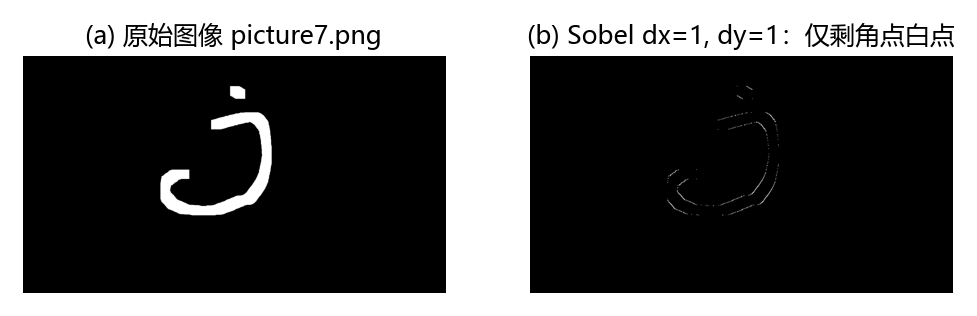
4. 计算 x 方向和 y 方向的边缘叠加#
如果想获取 x 方向和 y 方向的边缘叠加，需要分别获取水平方向、垂直方向两个方向的边缘图，然后将二者相加。语法格式为：
dx = cv2.Sobel( src, ddepth, 1, 0 )
dy = cv2.Sobel( src, ddepth, 0, 1 )
dst = cv2.addWeighted( src1, alpha, src2, beta, gamma )
使用上述语句获取边缘图的示意图如图 9-11 所示。
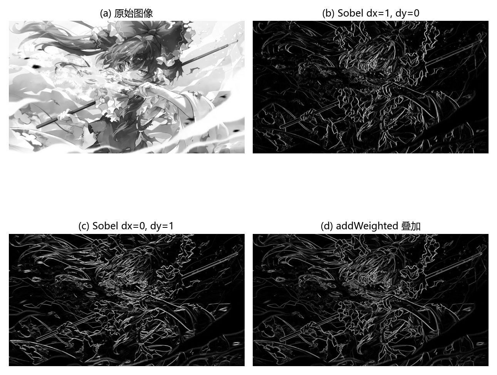
拓展：dx=1, dy=1 为什么几乎全黑
dx=1 且 dy=1 时，OpenCV 在 x、y 两个方向上各取一次一阶差分，等效核是对角差分 \(\begin{pmatrix} 0.25 & 0 & -0.25 \\ 0 & 0 & 0 \\ -0.25 & 0 & 0.25 \end{pmatrix}\)——只有主对角线与副对角线两端有系数。二值图内部是分片常数区域，x、y 方向不同时变化，响应处处接近 0，只在角点处留下白点。它不是"两个方向边缘的合成"，而是另一种算子（对角方向的混合偏导数）。
拓展：addWeighted 与真正的梯度幅值
cv2.addWeighted(src1, alpha, src2, beta, gamma) 计算 dst = src1·alpha + src2·beta + gamma，0.5/0.5 的写法就是对两个方向边缘取平均。数学上更标准的合成是梯度幅值（gradient magnitude）\(\sqrt{G_x^2 + G_y^2}\)，它对任意方向的边缘等权响应；|Gx|+|Gy| 是它的分块线性近似。第 10 章 Canny 边缘检测内部用的就是幅值形式。
9.2.3 实例#
本节通过实例介绍如何使用函数 cv2.Sobel() 获取图像边缘信息。
【例 9.2】使用函数 cv2.Sobel() 获取图像水平方向的边缘信息。参数 ddepth 的值设置为 -1，参数 dx 和 dy 的值设置为 "dx=1, dy=0"。
# ===== 9.2.3 例 9.2：ddepth=-1 的陷阱 =====
import cv2
o = cv2.imread('picture7.png', cv2.IMREAD_GRAYSCALE) # 原书 Sobel4.bmp
Sobelx = cv2.Sobel(o, -1, 1, 0) # ddepth=-1：结果仍是 8 位图
cv2.imshow("original", o)
cv2.imshow("x", Sobelx)
cv2.waitKey()
cv2.destroyAllWindows()
运行程序，结果如图 9-12 所示。
分析：当参数 ddepth 的值为 -1 时，只得到了图中白色字母 j 的右边界。左边界在运算时得到了负值，其在显示时被调整为 0，所以没有显示出来。要想获取左边界的值（将其显示出来），必须将参数 ddepth 的值设置为更大范围的数据类型，并将其映射到 8 位图像内。
【例 9.3】使用函数 cv2.Sobel() 获取图像水平方向的完整边缘信息。参数 ddepth 的值设置为 cv2.CV_64F，并使用函数 cv2.convertScaleAbs() 对计算结果取绝对值。
# ===== 9.2.3 例 9.3：CV_64F + convertScaleAbs =====
import cv2
o = cv2.imread('picture7.png', cv2.IMREAD_GRAYSCALE) # 原书 Sobel4.bmp
Sobelx = cv2.Sobel(o, cv2.CV_64F, 1, 0) # 64 位浮点：保留负梯度
Sobelx = cv2.convertScaleAbs(Sobelx) # 取绝对值并转回 8 位图
cv2.imshow("original", o)
cv2.imshow("x", Sobelx)
cv2.waitKey()
cv2.destroyAllWindows()
运行程序，结果如图 9-13 所示。
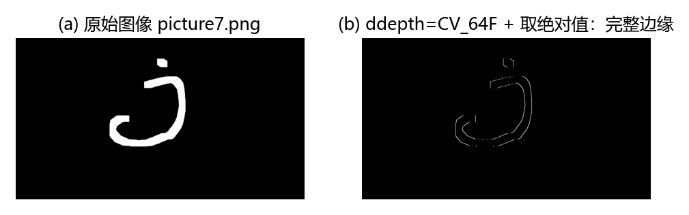
分析：将 ddepth 设置为 cv2.CV_64F、参数设置为 "dx=1, dy=0"，执行 cv2.Sobel() 后再对结果取绝对值，可以获取图像在水平方向的完整边缘信息。
上述差别在自然图像上同样明显。图 9-30 把 picture1.jpg 上的同一组处理放在一起：ddepth=-1 时只保留了灰度上升一侧的边缘，画面明显偏暗（实测平均亮度约为完整结果的一半）；换成 cv2.CV_64F + 取绝对值后，两侧边缘都完整保留。
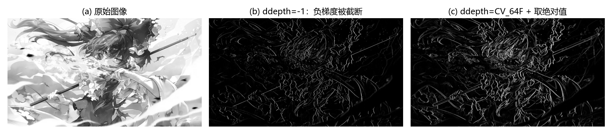
【例 9.4】使用函数 cv2.Sobel() 获取图像垂直方向的边缘信息。参数 ddepth 的值设置为 cv2.CV_64F，并用 cv2.convertScaleAbs() 取绝对值。
# ===== 9.2.3 例 9.4：垂直方向完整边缘 =====
import cv2
o = cv2.imread('picture7.png', cv2.IMREAD_GRAYSCALE) # 原书 Sobel4.bmp
Sobely = cv2.Sobel(o, cv2.CV_64F, 0, 1) # dy=1：垂直方向求导
Sobely = cv2.convertScaleAbs(Sobely)
cv2.imshow("original", o)
cv2.imshow("y", Sobely)
cv2.waitKey()
cv2.destroyAllWindows()
运行程序，结果如图 9-14 所示。
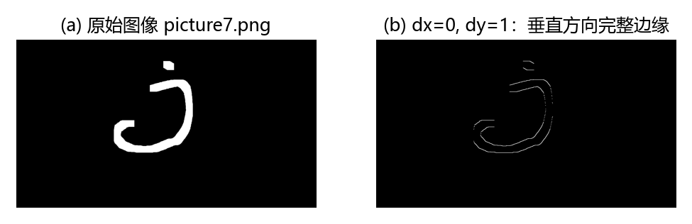
分析：ddepth 设置为 cv2.CV_64F、参数为 "dx=0, dy=1"，配合 cv2.convertScaleAbs() 取绝对值，可以获取图像在垂直方向的完整边缘信息。
【例 9.5】当参数 dx 和 dy 的值为 "dx=1, dy=1" 时，查看函数 cv2.Sobel() 的执行效果。
# ===== 9.2.3 例 9.5：dx=1, dy=1 的效果 =====
import cv2
o = cv2.imread('picture7.png', cv2.IMREAD_GRAYSCALE) # 原书 Sobel4.bmp
Sobelxy = cv2.Sobel(o, cv2.CV_64F, 1, 1) # x、y 方向各求一次一阶导
Sobelxy = cv2.convertScaleAbs(Sobelxy)
cv2.imshow("original", o)
cv2.imshow("xy", Sobelxy)
cv2.waitKey()
cv2.destroyAllWindows()
运行程序，结果与图 9-10 一致：边缘图中仅有若干个微小白点，不再包含完整的边界线条。
【例 9.6】计算函数 cv2.Sobel() 在水平、垂直两个方向叠加的边缘信息。
# ===== 9.2.3 例 9.6：addWeighted 叠加两个方向 =====
import cv2
o = cv2.imread('picture7.png', cv2.IMREAD_GRAYSCALE) # 原书 Sobel4.bmp
Sobelx = cv2.Sobel(o, cv2.CV_64F, 1, 0) # x 方向边缘
Sobely = cv2.Sobel(o, cv2.CV_64F, 0, 1) # y 方向边缘
Sobelx = cv2.convertScaleAbs(Sobelx) # 各自取绝对值转 8 位
Sobely = cv2.convertScaleAbs(Sobely)
Sobelxy = cv2.addWeighted(Sobelx, 0.5, Sobely, 0.5, 0) # 0.5/0.5 加权叠加
cv2.imshow("original", o)
cv2.imshow("xy", Sobelxy)
cv2.waitKey()
cv2.destroyAllWindows()
运行程序，结果如图 9-16 所示。
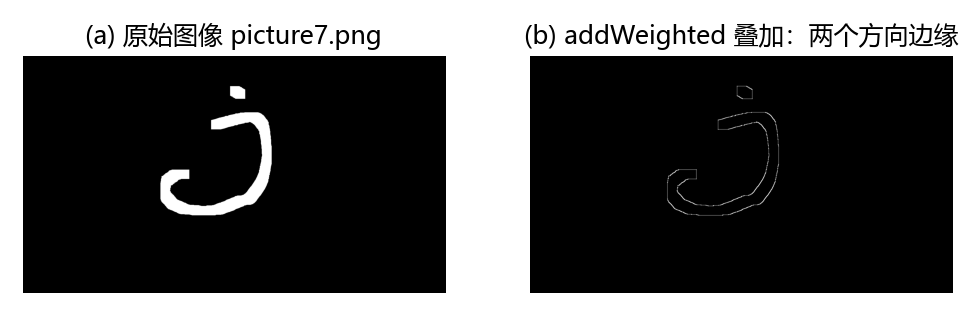
分析：本例先分别计算 x 方向的边缘、y 方向的边缘，再使用函数 cv2.addWeighted() 对两个方向的边缘进行叠加。在最终的叠加边缘结果中，同时显示两个方向的边缘信息。
【例 9.7】使用不同方式处理图像在两个方向的边缘信息：方式 1 分别计算 "dx=1, dy=0" 与 "dx=0, dy=1" 后用 addWeighted 相加；方式 2 直接设 "dx=1, dy=1"。
# ===== 9.2.3 例 9.7：两种合成方式对比 =====
import cv2
o = cv2.imread('picture1.jpg', cv2.IMREAD_GRAYSCALE) # 原书 lena.bmp
# 方式 1：分方向计算后再叠加
Sobelx = cv2.Sobel(o, cv2.CV_64F, 1, 0)
Sobely = cv2.Sobel(o, cv2.CV_64F, 0, 1)
Sobelx = cv2.convertScaleAbs(Sobelx)
Sobely = cv2.convertScaleAbs(Sobely)
Sobelxy = cv2.addWeighted(Sobelx, 0.5, Sobely, 0.5, 0)
# 方式 2：dx=1, dy=1 一步到位
Sobelxy11 = cv2.Sobel(o, cv2.CV_64F, 1, 1)
Sobelxy11 = cv2.convertScaleAbs(Sobelxy11)
cv2.imshow("original", o)
cv2.imshow("xy", Sobelxy) # 方式 1：完整边缘
cv2.imshow("xy11", Sobelxy11) # 方式 2：明显偏暗
cv2.waitKey()
cv2.destroyAllWindows()
运行程序，结果如图 9-17 所示，其中左图为原始图像，中间的图为方式 1 对应的图像，右图为方式 2 对应的图像。
两种方式的差别一目了然：要拿"完整边缘"，就走"分方向计算 + addWeighted 叠加"的路；"dx=1, dy=1" 是混合偏导数，不是边缘合成。
9.3 Scharr 算子及函数使用#
在离散的空间上，有很多方法可以用来计算近似导数。在使用 3×3 的 Sobel 算子时，计算结果可能并不太精准。OpenCV 提供了 Scharr 算子（Scharr operator），该算子具有和 Sobel 算子同样的速度，且精度更高。可以将 Scharr 算子看作对 Sobel 算子的改进，其核通常为：
OpenCV 提供了函数 cv2.Scharr() 来计算 Scharr 算子，其语法格式如下：
式中：
- dst 代表输出图像。
- src 代表原始图像。
- ddepth 代表输出图像深度，含义与
cv2.Sobel()中的 ddepth 相同，参考表 9-1。 - dx 代表 x 方向上的导数阶数。
- dy 代表 y 方向上的导数阶数。
- scale 代表计算导数值时的缩放因子，可选，默认为 1，表示没有缩放。
- delta 代表加到目标图像上的亮度值，可选，默认为 0。
- borderType 代表边界样式，参考表 9-2。
在函数 cv2.Sobel() 中介绍过，如果 ksize=-1，则会使用 Scharr 滤波器。因此，如下语句：
和
是等价的。
原书笔误：ksize=-1 的传参方式
一方面，原书多处伪代码把 ddepth 拼成 "ddpeth"（应为 ddepth）。另一方面，原书给出的等价写法 dst=cv2.Sobel(src, ddepth, dx, dy, -1) 在 Python 里会把 -1 传给第 5 个位置参数 dst（输出占位），而不是 ksize——实测它等价于默认 ksize=3 的普通 Sobel，并非 Scharr。Python 绑定的参数顺序是 Sobel(src, ddepth, dx, dy[, dst[, ksize[, ...]]])，想启用 Scharr 必须写成 ksize=-1（关键字）或先用 None 占位：cv2.Sobel(src, ddepth, dx, dy, None, -1)。
函数 cv2.Scharr() 和函数 cv2.Sobel() 的使用方式基本一致。
首先，参数 ddepth 的值应该设置为 cv2.CV_64F，并对函数 cv2.Scharr() 的计算结果取绝对值，才能保证得到正确的处理结果：
另外，在函数 cv2.Scharr() 中，要求参数 dx 和 dy 满足条件：
因此，参数 dx 和参数 dy 的组合形式有：
- 计算 x 方向边缘（梯度）：dx=1, dy=0。
- 计算 y 方向边缘（梯度）：dx=0, dy=1。
- 计算 x 方向与 y 方向的边缘叠加：通过组合方式实现。
计算 x 方向边缘使用的语句是 dst = cv2.Scharr(src, ddepth, 1, 0)；计算 y 方向边缘使用的语句是 dst = cv2.Scharr(src, ddepth, 0, 1)。计算两个方向的边缘叠加使用的语句是：
dx = cv2.Scharr(src, ddepth, 1, 0)
dy = cv2.Scharr(src, ddepth, 0, 1)
Scharrxy = cv2.addWeighted(dx, 0.5, dy, 0.5, 0)
需要注意的是，参数 dx 和 dy 的值不能都为 1。如下语句是错误的：
【例 9.8】使用函数 cv2.Scharr() 获取图像水平方向的边缘信息。
# ===== 9.3 例 9.8：Scharr 水平方向边缘 =====
import cv2
o = cv2.imread('picture7.png', cv2.IMREAD_GRAYSCALE) # 原书 Scharr.bmp
Scharrx = cv2.Scharr(o, cv2.CV_64F, 1, 0) # dx=1, dy=0
Scharrx = cv2.convertScaleAbs(Scharrx)
cv2.imshow("original", o)
cv2.imshow("x", Scharrx)
cv2.waitKey()
cv2.destroyAllWindows()
运行程序，结果如图 9-18 所示。
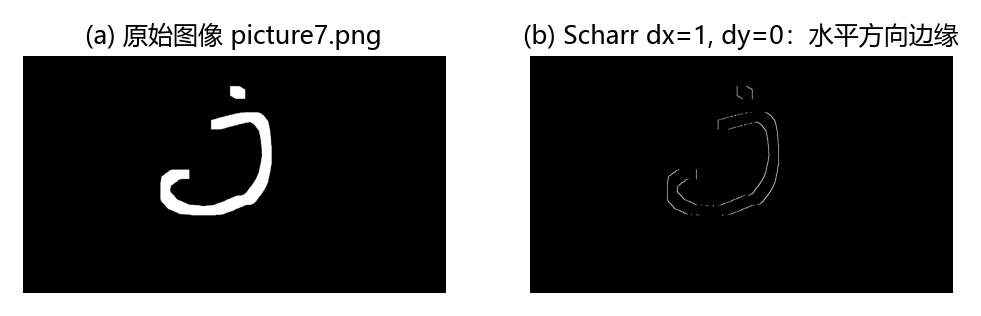
【例 9.9】使用函数 cv2.Scharr() 获取图像垂直方向的边缘信息。
# ===== 9.3 例 9.9：Scharr 垂直方向边缘 =====
import cv2
o = cv2.imread('picture7.png', cv2.IMREAD_GRAYSCALE) # 原书 Scharr.bmp
Scharry = cv2.Scharr(o, cv2.CV_64F, 0, 1) # dx=0, dy=1
Scharry = cv2.convertScaleAbs(Scharry)
cv2.imshow("original", o)
cv2.imshow("y", Scharry)
cv2.waitKey()
cv2.destroyAllWindows()
运行程序，窗口中显示垂直方向的边缘信息。
【例 9.10】使用函数 cv2.Scharr() 实现水平方向和垂直方向边缘叠加的效果。
# ===== 9.3 例 9.10：Scharr 两个方向叠加 =====
import cv2
o = cv2.imread('picture7.png', cv2.IMREAD_GRAYSCALE) # 原书 scharr.bmp
scharrx = cv2.Scharr(o, cv2.CV_64F, 1, 0)
scharry = cv2.Scharr(o, cv2.CV_64F, 0, 1)
scharrx = cv2.convertScaleAbs(scharrx)
scharry = cv2.convertScaleAbs(scharry)
scharrxy = cv2.addWeighted(scharrx, 0.5, scharry, 0.5, 0)
cv2.imshow("original", o)
cv2.imshow("xy", scharrxy)
cv2.waitKey()
cv2.destroyAllWindows()
运行程序，得到水平方向和垂直方向边缘的叠加图。
【例 9.11】观察将函数 cv2.Scharr() 的参数 dx、dy 同时设置为 1 时，程序的运行情况。
# ===== 9.3 例 9.11：dx=1, dy=1 直接报错 =====
import cv2
o = cv2.imread('picture7.png', cv2.IMREAD_GRAYSCALE) # 原书此处路径为 image\Scharr.bmp
Scharrxy11 = cv2.Scharr(o, cv2.CV_64F, 1, 1) # 违反 dx+dy==1 约束
cv2.imshow("original", o)
cv2.imshow("xy11", Scharrxy11)
cv2.waitKey()
cv2.destroyAllWindows()
运行程序，报错如下：
分析：不允许将函数 cv2.Scharr() 的参数 dx 和 dy 的值同时设置为 1。本例将这两个参数的值都设置为 1 后，程序报错。Sobel 允许 dx=1, dy=1，Scharr 不允许——这是两个函数参数约束上的实际差别。
【例 9.12】使用函数 cv2.Sobel() 完成 Scharr 算子的运算。当函数 cv2.Sobel() 中 ksize 的参数值为 -1 时，就会使用 Scharr 算子进行运算。
# ===== 9.3 例 9.12：Sobel 的 ksize=-1 形式 =====
import cv2
o = cv2.imread('picture7.png', cv2.IMREAD_GRAYSCALE) # 原书 Sobel4.bmp
Scharrx = cv2.Sobel(o, cv2.CV_64F, 1, 0, ksize=-1) # ksize=-1 即 Scharr；原书位置写法 (…,1,0,-1) 的 -1 会落到 dst 上
Scharry = cv2.Sobel(o, cv2.CV_64F, 0, 1, ksize=-1)
Scharrx = cv2.convertScaleAbs(Scharrx)
Scharry = cv2.convertScaleAbs(Scharry)
cv2.imshow("original", o)
cv2.imshow("x", Scharrx)
cv2.imshow("y", Scharry)
cv2.waitKey()
cv2.destroyAllWindows()
运行程序，结果如图 9-21 所示，其中左图为原始图像，中间的图为水平边缘图像，右图为垂直边缘图像。
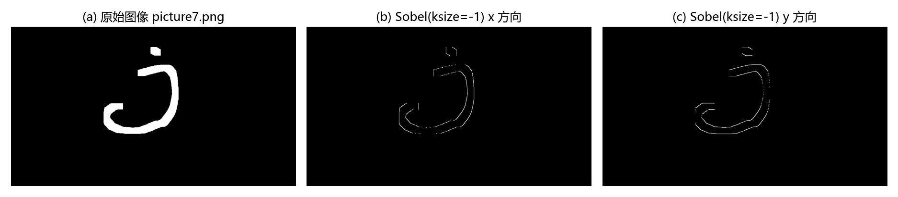
拓展：权重为什么是 3、10、3
Scharr 核是把 3×3 差分核的旋转对称性（rotational symmetry）误差做到最小的解：Sobel 的平滑权重 \([1, 2, 1]\) 对斜方向边缘有明显的方向偏差（测得的梯度方向会偏离真实方向），把平滑权重换成 \([3, 10, 3]\) 后偏差几乎消失，且核同样可分离（平滑 \([3, 10, 3]^{\mathrm T}\) × 差分 \([-1, 0, 1]\)）。因此 OpenCV 文档明确建议：固定用 3×3 核时，直接选 Scharr。代价是中心行/列权重大，对噪声的放大也比 Sobel 略强。
9.4 Sobel 算子和 Scharr 算子的比较#
Sobel 算子的缺点是，当其核结构较小时，精确度不高，而 Scharr 算子具有更高的精度。Sobel 算子和 Scharr 算子的核结构如图 9-22 所示。
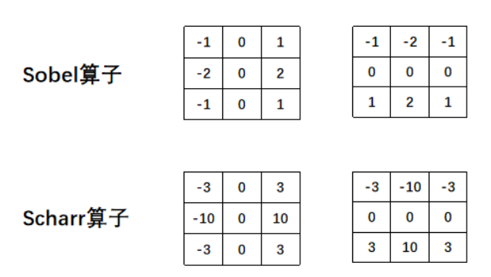
【例 9.13】分别使用 Sobel 算子和 Scharr 算子计算一幅图像的水平边缘和垂直边缘的叠加信息。
# ===== 9.4 例 9.13：Sobel 与 Scharr 同图对比 =====
import cv2
o = cv2.imread('picture1.jpg', cv2.IMREAD_GRAYSCALE) # 原书 lena.bmp
# Sobel：ksize=3
Sobelx = cv2.Sobel(o, cv2.CV_64F, 1, 0, ksize=3)
Sobely = cv2.Sobel(o, cv2.CV_64F, 0, 1, ksize=3)
Sobelx = cv2.convertScaleAbs(Sobelx)
Sobely = cv2.convertScaleAbs(Sobely)
Sobelxy = cv2.addWeighted(Sobelx, 0.5, Sobely, 0.5, 0)
# Scharr
Scharrx = cv2.Scharr(o, cv2.CV_64F, 1, 0)
Scharry = cv2.Scharr(o, cv2.CV_64F, 0, 1)
Scharrx = cv2.convertScaleAbs(Scharrx)
Scharry = cv2.convertScaleAbs(Scharry)
Scharrxy = cv2.addWeighted(Scharrx, 0.5, Scharry, 0.5, 0)
cv2.imshow("original", o)
cv2.imshow("Sobelxy", Sobelxy)
cv2.imshow("Scharrxy", Scharrxy)
cv2.waitKey()
cv2.destroyAllWindows()
运行程序，结果如图 9-23 所示。
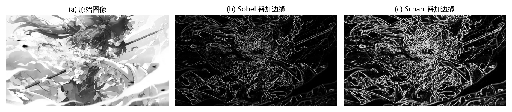
对比两个结果：Scharr 的边缘响应整体更亮，发丝、帽饰等弱纹理区域的边缘更多——同样的 3×3 大小、同样的计算量，Scharr 的灵敏度更高。
拓展：三种算子对噪声的敏感性对比
噪声敏感度从低到高：Sobel < Scharr < Laplacian。Sobel 的 \([1, 2, 1]\) 平滑成分权重最大，对随机噪声的抑制最好；Scharr 的 \([3, 10, 3]\) 把更多权重压在中心行/列上，灵敏度换来的就是噪声放大；Laplacian 是二阶导数，没有平滑成分，噪声经两次求导后被放大得最厉害。所以工程实践里用 Laplacian 前通常先做高斯平滑（第 7 章），"先模糊、再求二阶导"的思路也是高斯-拉普拉斯（LoG）方法的出发点。
9.5 Laplacian 算子及函数使用#
Laplacian（拉普拉斯）算子（Laplacian operator）是一种二阶导数算子（second-order derivative operator），具有旋转不变性（rotation invariance），可以满足不同方向的图像边缘锐化（边缘检测）的要求。通常情况下，其算子的系数之和需要为零。一个 3×3 大小的 Laplacian 算子如图 9-24 所示。
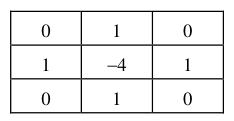
Laplacian 算子类似二阶 Sobel 导数，需要计算两个方向的梯度值。例如，在图 9-25 中，左图是 Laplacian 算子，右图是一个简单图像，其中有 9 个像素点。
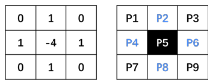
计算像素点 P5 的近似导数值：
图 9-26 展示了像素点与周围点的一些实例：
- 左图：像素点 P5 与周围像素点的值相差较小，得到的计算结果值较小，边缘不明显。
- 中图：像素点 P5 与周围像素点的值相差较大，得到的计算结果值较大，边缘较明显。
- 右图：与中图同理，P5 与周围的差值大，边缘明显。
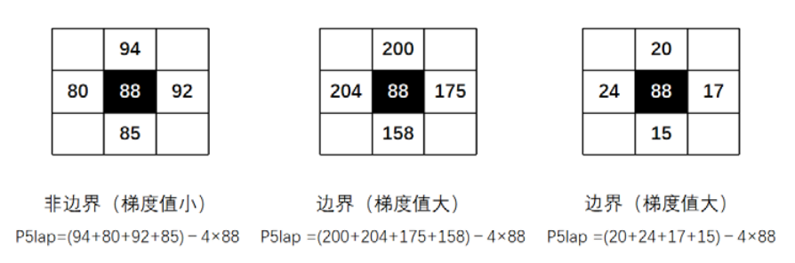
需要注意，在上述图像中，计算结果的值可能为正数，也可能为负数。所以，需要对计算结果取绝对值，以保证后续运算和显示都是正确的。
在 OpenCV 内使用函数 cv2.Laplacian() 实现 Laplacian 算子的计算，该函数的语法格式为：
式中：
- dst 代表目标图像。
- src 代表原始图像。
- ddepth 代表目标图像的深度。
- ksize 代表用于计算二阶导数的核尺寸大小，该值必须是正的奇数。
- scale 代表计算 Laplacian 值的缩放比例因子，可选，默认为 1，表示不进行缩放。
- delta 代表加到目标图像上的可选值，默认为 0。
- borderType 代表边界样式。
该函数分别对 x、y 方向进行二次求导：
上式是当 ksize 的值大于 1 时的情况。当 ksize 的值为 1 时，Laplacian 算子计算时采用的 3×3 的核如下：
通过从图像内减去它的 Laplacian 图像，可以增强图像的对比度，此时其算子如图 9-27 所示。
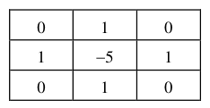
【例 9.14】使用函数 cv2.Laplacian() 计算图像的边缘信息。
# ===== 9.5 例 9.14：Laplacian 边缘 =====
import cv2
o = cv2.imread('picture7.png', cv2.IMREAD_GRAYSCALE) # 原书 Laplacian.bmp
Laplacian = cv2.Laplacian(o, cv2.CV_64F) # 默认 ksize=1：3×3 核
Laplacian = cv2.convertScaleAbs(Laplacian) # 二阶导有正有负，取绝对值
cv2.imshow("original", o)
cv2.imshow("Laplacian", Laplacian)
cv2.waitKey()
cv2.destroyAllWindows()
运行程序，结果如图 9-28 所示，其中左图为原始图像，右图为得到的边缘信息。
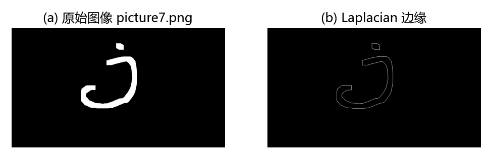
拓展：Laplacian 的响应怎么手算（实测对照）
核 \(\begin{pmatrix} 0 & 1 & 0 \\ 1 & -4 & 1 \\ 0 & 1 & 0 \end{pmatrix}\) 的响应 = 四邻域之和 − 4×中心。实测验证：构造 7×7 图，中心 3×3 抬高到 100、四周为 0，cv2.Laplacian(img, cv2.CV_64F, ksize=1) 在常数区内部点的响应为 0（邻域和 400 = 4×中心），块外邻点响应为 100（只有下邻是 100），块角点响应为 −200（右、下两邻各 100，减去 4×0）——与手算逐点一致。可见两点：平滑区域 Laplacian 响应恒为 0，这是"系数之和为 0"的直接体现；响应有正有负，取绝对值时正负边界都会亮起来。
9.6 算子总结#
Sobel 算子、Scharr 算子、Laplacian 算子都可以用作边缘检测，它们的核如图 9-29 所示。
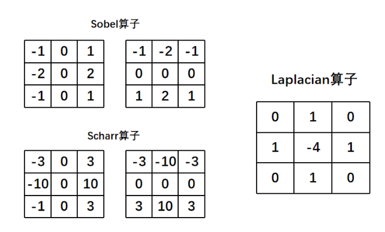
原书笔误：图 9-29 中 Scharr 核的一个系数
图 9-29 里 Scharr 算子的 Gx 核最后一行印作 "-1 0 3"，左下角的 -1 应为 -3。正确核为 \(\begin{pmatrix} -3 & 0 & 3 \\ -10 & 0 & 10 \\ -3 & 0 & 3 \end{pmatrix}\)（图 9-22 中的同一核是对的，两处应一致）。
Sobel 算子和 Scharr 算子计算的都是一阶近似导数的值。通常情况下，可以将它们表示为：
式中 "|左−右|" 表示左侧像素值减右侧像素值的结果的绝对值，"|下−上|" 表示下方像素值减上方像素值的结果的绝对值。斜线是"或"的意思：x 方向用 |左−右|，y 方向用 |下−上|。
Laplacian 算子计算的是二阶近似导数值，可以将它表示为：
通过公式可以发现，Sobel 算子和 Scharr 算子各计算了一次 "|左−右|" 和 "|下−上|" 的值，而 Laplacian 算子分别计算了两次 "|左−右|" 和 "|下−上|" 的值。
拓展：怎么理解各计算两次
二阶导数是"差分的差分"：以 x 方向为例，先算左差（左−中心）与右差（右−中心），再把两个差分相减、合并同类项，得到 (左 + 右 − 2×中心)；y 方向同理。两个方向合起来正是 (P2 + P4 + P6 + P8) − 4·P5。"各计算两次 |左−右|、|下−上|"说的就是这个"两次差分"的结构，不是字面上把同一个绝对值加两遍。
三种算子放在一起对比：
| 算子 | 导数阶数 | 核特点 | 噪声敏感性 | 典型用途 |
|---|---|---|---|---|
| Sobel | 一阶 | 平滑权重 1、2、1 + 差分 | 最低（自带平滑） | 通用边缘检测、梯度预处理 |
| Scharr | 一阶 | 平滑权重 3、10、3 + 差分 | 中（中心行/列权重大） | 3×3 核下的高精度梯度 |
| Laplacian | 二阶 | 中心 -4，系数和为 0 | 最高（无平滑成分） | 各向同性边缘、锐化 |
图 9-31 把三种算子作用于同一幅 picture1.jpg 的结果放在一起：Scharr 的响应整体最亮（叠加边缘的平均亮度约为 Sobel 的 2.5 倍），Sobel 居中；Laplacian 的边缘线最细，但碎细节最多，噪声也最容易被放大——与上表的"噪声敏感性"排序一致。
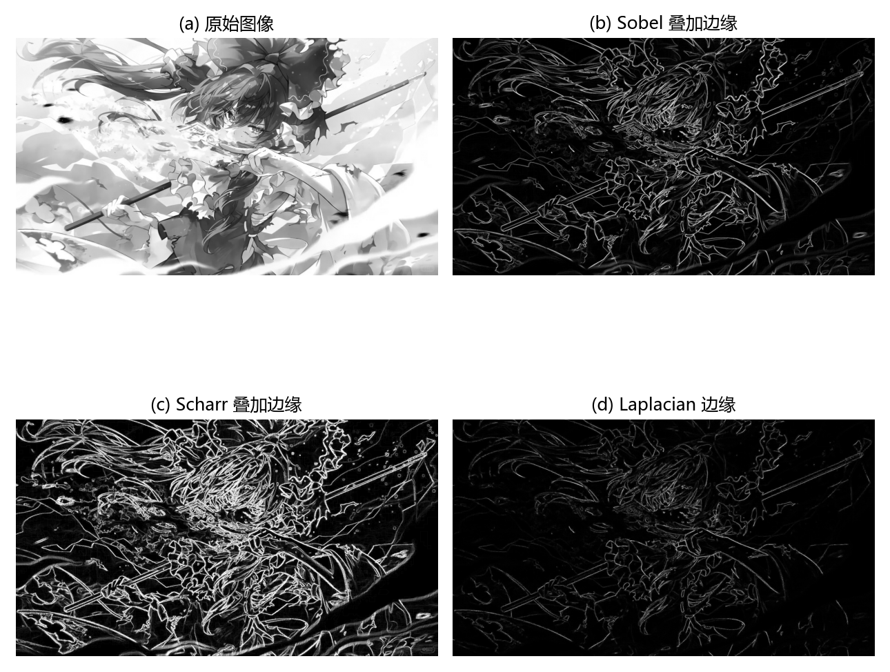
坑与陷阱#
8 个容易踩的坑
- ddepth=-1 会吞掉负梯度：8 位图下所有负偏导数自动截断为 0，一侧边界直接消失（例 9.2 只剩右边界）。固定套路：
cv2.Sobel(o, cv2.CV_64F, dx, dy)+cv2.convertScaleAbs()，Laplacian 同理。 cv2.Sobel(..., 1, 0, -1)的 -1 不是 ksize：Python 绑定的参数顺序是 (src, ddepth, dx, dy, dst, ksize, ...)，第 5 个位置参数是输出占位 dst。实测cv2.Sobel(img, cv2.CV_64F, 1, 0, -1)等于默认 ksize=3 的普通 Sobel。启用 Scharr 必须写ksize=-1关键字，或用 None 占位后传 -1。- 两个函数的方向约束不同：Sobel 要求 dx、dy 不同时为 0，但允许 dx=1, dy=1（结果是混合偏导数，不是边缘合成）；Scharr 要求
dx >= 0 && dy >= 0 && dx+dy == 1，dx=1, dy=1 直接抛Assertion failed ... getScharrKernels。 - 64 位浮点结果不能直接 imshow：
cv2.CV_64F的结果有正有负、数值远超 \([0, 255]\)，imshow 对浮点图按 0~1 映射且负值无法显示，画面会近乎全黑。必须先convertScaleAbs转回 uint8。 - addWeighted 叠加的是取绝对值后的图：对 CV_64F 的 x、y 边缘直接 addWeighted，负值仍在，转 uint8 时又被截断丢失；正确流程是每个方向先 convertScaleAbs 再叠加。另外 0.5/0.5 是平均，不是梯度幅值 \(\sqrt{G_x^2+G_y^2}\)。
- ksize 的合法取值：Sobel 的 ksize 只能是 1、3、5、7（正奇数），-1 有特殊含义（Scharr）；Laplacian 的 ksize 必须是正奇数。传偶数或非法值会直接报错。
- Laplacian 最怕噪声：二阶导数无平滑成分，噪声被放大得最厉害。先用高斯模糊（第 7 章）再求 Laplacian，是标准做法。
- 边界处理影响边缘结果：OpenCV 默认
borderType=cv2.BORDER_DEFAULT（等价 BORDER_REFLECT_101，镜像填充），核在图像边缘处的响应与手算（补 0）不同；表 9-2 里的 BORDER_WRAP 在 OpenCV 手册中标注 Sobel 不支持。
速览#
- 图像梯度 = 灰度变化的速度：边缘处大、平滑处小；图像不求导，用像素差分近似导数。右侧减左侧找竖直边界，下侧减上侧找水平边界。
- Sobel 是"高斯平滑 + 一阶差分"的离散微分算子：Gx 右减左（中间行权重 2），Gy 下减上（中间列权重 2）；\(P5_x = (P3-P1) + 2(P6-P4) + (P9-P7)\)，\(P5_y = (P7-P1) + 2(P8-P2) + (P9-P3)\)。
- 滤波器 = 核 = 掩模 = 模板 = 算子；线性滤波即卷积。
- ddepth 必须设
cv2.CV_64F（设 -1 时负梯度截断为 0，丢一侧边界），再用cv2.convertScaleAbs()取绝对值转 8 位：dst = saturate(src·alpha + beta)。 - 方向组合：dx=1,dy=0 提取竖直线条（x 方向边缘）；dx=0,dy=1 提取水平线条；dx=1,dy=1 是混合偏导数，二值图上只剩角点白点、自然图上明显偏暗；完整边缘用
cv2.addWeighted(x, 0.5, y, 0.5, 0)叠加。 - Scharr：平滑权重 3、10、3，与 Sobel 同速度、3×3 下精度更高；等价写法是 Sobel 的
ksize=-1（必须关键字传参）；约束 dx+dy=1，不允许 dx=1, dy=1。 - Laplacian：二阶导数算子，旋转不变，核中心 -4、系数和为 0；响应 = (P2+P4+P6+P8) − 4·P5，平滑区为 0，边缘处可正可负需取绝对值；中心改 -5 的扩展核用于对比度增强（锐化）。
- 一阶两算子各算一次 "|左−右|" 与 "|下−上|"；Laplacian 是"差分的差分"，各算两次。
- 噪声敏感性：Sobel 最低、Scharr 居中、Laplacian 最高；用 Laplacian 前先平滑。
- borderType 默认 BORDER_DEFAULT（=REFLECT_101）；常用还有 REPLICATE（复制边界）、CONSTANT（常数填充）。
术语速查#
| 英文 / 函数 | 中文 | 一句话 |
|---|---|---|
| image gradient | 图像梯度 | 灰度变化的速度，边缘大、平滑小 |
| finite difference | 差分 | 相邻像素相减，导数的离散近似 |
| edge | 边缘 | 灰度发生突变的位置 |
| Sobel operator | Sobel 算子 | 高斯平滑 + 一阶差分的离散微分算子 |
| Scharr operator | Scharr 算子 | 权重 3、10、3 的 Sobel 改进版，3×3 下精度更高 |
| Laplacian operator | 拉普拉斯算子 | 二阶导数算子，旋转不变，各向同性 |
| discrete differentiation operator | 离散微分算子 | 在离散像素上近似求导的算子 |
| Gaussian smoothing | 高斯平滑 | 按高斯分布加权的邻域平均，抑制噪声 |
| filter | 滤波器 | 由邻域和预定义操作构成的图像变换算法 |
| kernel | 核 | 滤波所用的系数矩阵，也叫掩模、模板、窗口 |
| operator | 算子 | 核的习惯叫法，本章指各类滤波器 |
| linear filter | 线性滤波器 | 目标像素等于邻域像素的加权和 |
| convolution | 卷积 | 核在图像上滑动做加权求和的运算 |
| partial derivative | 偏导数 | 单个方向上的导数，Gx、Gy |
| first-order derivative | 一阶导数 | 变化率，Sobel/Scharr 近似对象 |
| second-order derivative | 二阶导数 | 变化率的变化率，Laplacian 近似对象 |
| gradient magnitude | 梯度幅值 | 两个方向梯度的合成强度 |
| ddepth | 输出深度 | 结果图像的数据类型，取 CV_64F 防截断 |
| cv2.CV_64F | 64 位浮点深度 | 保留负梯度值的数据类型 |
| cv2.convertScaleAbs | 绝对值转换 | dst = saturate(src·alpha + beta)，转 8 位图 |
| saturation | 饱和 | 超过 255 按 255 处理（区别于回绕） |
| wrap around | 回绕 | 越界数值按内存取模处理，astype 的行为 |
| cv2.addWeighted | 加权叠加 | dst = src1·alpha + src2·beta + gamma |
| borderType | 边界样式 | 核超出图像边界时的填充方式 |
| rotation invariance | 旋转不变性 | 旋转图像后检测结果不变，Laplacian 特性 |
| separable kernel | 可分离核 | 能拆成两个一维核外积的核，省计算量 |
| edge detection | 边缘检测 | 找出图像中灰度突变位置的处理 |